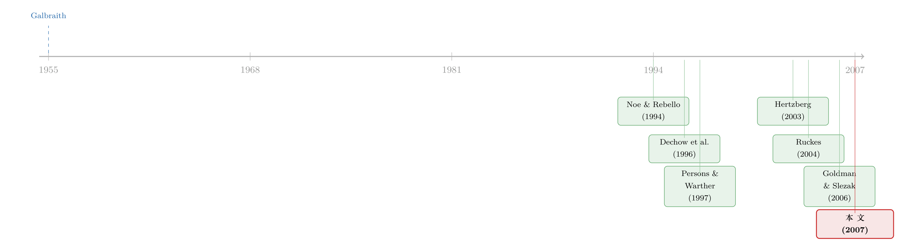

好日子才是说谎的最佳时机：一个关于繁荣、萧条与欺诈的均衡故事
本文读的是 Povel, Singh & Winton (2007, Review of Financial Studies)：即便投资者完全理性，企业造假的动机也在「相对的好时光」里最强——而且当监督成本越低、信息披露越充分，造假反而可能越多。一句话，欺诈不是繁荣的副产品，它是繁荣内生的均衡选择。
1 一个老掉牙、却始终说不清的直觉
几乎每一轮繁荣的尾声，都会跟着一地鸡毛。1920 年代如此，1960 年代的「go-go」牛市如此，1980 年代的垃圾债与杠杆收购如此，1990 年代末的互联网与电信泡沫更是如此——长牛之后先是衰退，紧接着是一连串触目惊心的财务丑闻：WorldCom、Qwest、Global Crossing、Lucent……名字一个比一个响亮。
于是人们形成了一个根深蒂固的信念：繁荣会孕育并掩盖欺诈，而萧条会把它们一一揭穿。
直觉很顺，可一旦追问「为什么」，分歧立刻出现。一派人说，这是监管不够，得逼企业披露更多信息、重整治理流程（1930 年代的 SEC、2002 年的萨班斯—奥克斯利法案，都是这个逻辑的产物）；另一派人则把矛头指向投资者——牛市里大家太亢奋、太不上心，没有像本该做的那样去仔细审视自己投钱的公司。《经济学人》甚至直接下了结论：「这次泡沫，和每一次泡沫一样，最重要的教训只有一句——buyer beware（买者自负）。」
听上去都有道理。但 Povel、Singh 和 Winton 在这篇文章里想问一个更刁钻的问题：
如果投资者其实完全理性呢？欺诈在好时光里集中爆发，还会发生吗？
他们的答案是：会，而且必然。 这正是全文的核心张力——你不需要「非理性的乐观」「粗心的投资者」这些行为假设，光靠一群精于算计、各为其利的理性人，就能把「繁荣—萧条—欺诈」这条曲线完整地复现出来。更刁钻的是，那些看上去理所当然的「解药」——降低监督成本、强制更多披露——在他们的模型里反而可能把病情加重。
2 模型设定：一桩融资里的三个动作
要把这个反直觉的结论讲透，得先把舞台搭起来。模型很简洁，经济里有同样数量的企业经理和投资者，每人只活一期。
企业一侧。 每家企业需要 I 单位现金启动投资，期末以概率 θ_i 产出可分配现金流 R > I，以概率 1-θ_i 产出零。类型 i ∈ {g, b}，且 0 ≤ θ_b < θ_g < 1。论文用净现值 (net present value, NPV) 把「好」「坏」定义清楚：
$$N_g = \theta_g R - I > 0, \qquad N_b = -(\theta_b R - I) > 0$$
也就是说，好企业（g）是正 NPV 的项目，坏企业（b）是负 NPV 的项目，而 N_b 恰好是投资一家坏企业的期望损失（取了绝对值）。此外，只要项目被融资，经理就能攫取一笔不可契约化的控制权私利 (control benefits) C——这是关键：无论好坏，经理都想让自己的项目拿到钱。
投资者一侧。 投资者先和经理随机配对，配对后会收到一个免费但有噪声的信号 s ∈ {h, l}（你可以理解成一份财报或新闻稿）。在没有造假的情况下，信号和真实类型正相关：
$$\Pr\{h \mid g\} = \gamma > \tfrac{1}{2} > \beta = \Pr\{h \mid b, \text{no fraud}\}$$
三个动作，按时间排开： 配对 → 经理决定是否造假 → 投资者看到信号后决定是否花成本 m 去监督 (monitor)（监督能完美揭穿真实类型）→ 投资者做出「投或不投」的 take-it-or-leave-it 报价。
3 造假是怎么「改写信号」的
现在轮到全文的发动机——欺诈。
经理造假要付出成本 f（既包含造假本身的努力，也包含日后被抓被罚的折算）。造假的作用是把坏企业产出高信号的概率从 β 抬高 δ：
$$\Pr\{h \mid b, \text{fraud}\} = \beta + \delta < \gamma, \qquad \delta < \gamma - \beta$$
注意这个不等式 β + δ < γ：造假能让坏企业「看起来更像好企业」，但永远没法完全冒充——信号被污染了，却仍残留一点信息量。而造假只在 f < δC 时才可能有吸引力（造假的边际收益是多拿到 C 的那点概率乘以 δ），论文此后一直假设这个条件成立。
这里有个被作者明确简化掉的设定：只有坏企业会造假。第 4 节里他们放开了这一假设，允许好企业也造假，结论基本不变——只要坏企业从造假中能得到的更多。
那么投资者怎么解读信号？设坏企业以概率 φ 造假，投资者看到信号 s 后对「企业是好的」的后验概率，由贝叶斯法则给出。看到高信号 h 时的后验是全文最核心的一块积木，我们把它拆开标注：
对称地，看到低信号 l 时的后验为
$$\hat\mu_\ell(\varphi) = \mu \Big/ \Big( \mu + (1-\mu)\,\tfrac{1-\beta-\varphi\delta}{1-\gamma} \Big)$$
把所有 φ ∈ (0,1) 串起来，会得到一条漂亮的排序链：
$$\hat\mu_\ell(0) < \hat\mu_\ell(\varphi) < \hat\mu_\ell(1) < \mu < \hat\mu_h(1) < \hat\mu_h(\varphi) < \hat\mu_h(0)$$
这条不等式的直觉是：高信号永远比低信号让人更乐观；但造假越普遍（φ 越大），后验就越往先验 μ 收缩——因为信号被污染了，看了等于白看。造假，本质上是在「消耗」公共信号的信息含量。
4 反转：为什么造假在「好时光」里最猖獗
模型搭好了，现在把核心问题摆上来：先验 μ（也就是经济的好坏）如何决定造假的均衡概率？
作者的第一个、也是最重要的结论是：造假关于 μ 是驼峰形 (hump-shaped) 的——先随 μ 上升，到达顶点后又下降。让我们沿着 μ 从低到高走一遍这条曲线，反转就藏在路上。
首先，当 μ 很低或中等（萧条或平庸时期）。 此时即便一家企业亮出高信号，残留的不确定性仍然很大，投资者觉得「值得花 m 去仔细监督一下」。既然高信号最终也躲不过监督，造假就没什么上行空间——造假很少，甚至为零。
接着，一个自然的问题是：把 μ 调高会怎样？ 当先验相当乐观时，投资者对高信号企业不再监督——因为高信号只是「确认」了他们本就乐观的判断，多此一举；但他们仍会盯紧低信号企业。于是局面变成：高信号=免监督放款，低信号=被严查。这恰恰是造假动机最强的区域——坏企业只要花 f 把信号从 l 推到 h，就能从「被严查的池子」溜进「免审放款的池子」。造假冲到峰值。
然后，反转出现。 如果 μ 高到离谱（异常繁荣），投资者会乐观到连低信号企业都不监督了——他们认定，低信号多半只是一家好企业「运气不好」，而非真的坏企业。吊诡的是，此时造假动机反而回落：坏企业不造假也照样拿得到钱，何必白花 f？
把这三段连起来，就是那条驼峰。而它给出的最反直觉的政策含义是：
「造假在好时光里最盛」这个结论，恰恰需要一定程度的「buyer beware」——投资者必须有能力监督、并且理性地决定要不要监督。换句话说，正是理性的、自利的监督行为本身，把造假推向了繁荣的尾巴。把投资者想象成一群天真乐观的傻瓜，反而解释不了这件事。
这套逻辑还顺手解释了 1990 年代末一个被忽视的对照：互联网板块和电信板块同样火热，可造假大案几乎全出在电信（WorldCom、Qwest……），互联网反倒鲜见。模型的解读是：投资者对互联网乐观到了不监督任何信号的程度（μ 极高，落在驼峰右侧），坏企业躺着就能拿钱、犯不上造假；而对电信，他们更挑剔、会严查低信号企业（μ 落在驼峰峰顶附近），于是坏企业被逼着去造假。
5 两把「解药」，为什么可能变成毒药
如果故事到此为止，它只是一个精巧的比较静态。真正让这篇文章扎人的，是它对两条主流政策处方的反击。
第一把解药：降低监督成本 m。 直觉上，让投资者更容易看穿企业（给他们更多权力、更好的技术），欺诈总该减少吧？模型说：不一定，甚至会更多。 当投资者先验偏乐观、监督火力集中在低信号企业身上时，降低 m 反而扩大了「低信号必被严查」的区域——这等于把坏企业更狠地往「造假逃离低信号池」这条路上逼。更微妙的是，作者证明：随着 m 下降，造假与好时光的相关性还会增强。直觉是，监督越便宜，投资者「无论信号高低一律警惕」的先验区间就越宽，于是先验得特别好，投资者才肯松一次警惕、造假才开始有利可图。整个 1990 年代，计算与通信技术大幅压低了审查企业的成本，可十年末尾——恰是投资者预期最高的时点——却爆发了一波欺诈潮。模型与史实，严丝合缝。
第二把解药：强制更多披露。 假设更好的披露让投资者更信任公共信息，于是他们更倾向于「见高信号就投、见低信号就拒」。那么坏企业就更有动力去造假，好把信号做成高信号。结论很冷峻：
要真正打击欺诈，披露标准必须直接让造假本身更难（比如提高 δ 的代价），而不是泛泛地「让投资者更信任公共信息」。后者只会把造假的赔率改写得对说谎者更有利。（关于「企业如何主动塑造自己被公开的信息」，可对照参见《新闻里那条「负面偏向」，竟是公司自己「逼」出来的》。）
6 动态版本：为什么造假总在繁荣尾声「爆表」
到这里，μ 还是外生给定的。文章第 3 节把它内生化：现实里没人确知经济的真实状态，企业和投资者只能根据近期历史（融资模式、多少企业盈利或倒闭）来形成信念——而信念调整是有时滞的。
于是繁荣尾声的剧本是这样写的：真实状态（坏企业的真实比例）已经悄然恶化，可企业和投资者还沉浸在「牛市仍在继续」的旧信念里。给定这套乐观信念，坏企业纷纷决定造假，投资者也懒得在高信号企业上多花监督资源。双方都基于「感知到的、虚高的状态」做决策，而真实状态才决定了实际有多少坏企业、多少人造假。 结果，当大量经营糟糕的企业集中暴露时，所有人都被「惊到」了——调查发现造假规模大得离谱。这正是「长牛往往以一波倒闭与丑闻收场」的内生解释。
值得强调的是，作者反复声明：这一切不需要有限理性。如果投资者确实会对近期信息过度反应、信念在乐观与悲观间大起大落，那只会进一步放大上述效应——两种力量是相辅相成的，但行为偏差并非必要条件。（这与把危机理解成「缓慢展开、迟迟才被定价」的思路相通，可参见《音乐停了，谁还在跳舞？——一个关于「延迟的危机」的理性预期模型》。）
7 文献脉络
把这篇文章放回它的谱系里，能更清楚地看到它「卡」在哪个位置。
最早，繁荣与欺诈的联系只是史家的叙事——Galbraith (1955) 笔下的 1929 年大崩盘就是范本。随后，金融学开始用模型去拆解经理的造假动机：Noe & Rebello (1994) 让有德与无德的经理共存，得到道德比例的周期性波动；会计与实证文献（如 Dechow, Sloan & Sweeney, 1996）发现，造假企业往往事前就更需要外部资金，且造假多以高报盈余的形式出现。

接着，一支「繁荣—萧条」的理论分流出现。Persons & Warther (1997) 研究金融创新采纳的浪潮，指出这类浪潮总以「最晚入场者亏钱」收尾，且终结时点事前随机、最晚入场者却完全理性——「萧条可以既出人意料、又完全理性」这一点，与本文气质相通。信贷周期一脉里，Ruckes (2004) 模型化了银行筛选借款人的激励如何放大信贷标准的周期波动。
而最贴近本文的，是 Hertzberg (2003)：好时光里投资者更愿给经理短期激励，短期激励又加剧财务误报，于是误报和好时光相关。但作者指出，这个机制严重依赖薪酬契约与经营前景的动态联系，而把高管薪酬与股东业绩挂钩恰恰始于 1990 年代初的衰退，因此无法完整解释繁荣与欺诈的关联，更无法解释电信与互联网的反差——两者是互补的，而非替代的。本文的独到之处，是把欺诈直接系在投资者随商业周期变化的监督行为上，这是此前文献都没碰过的角度。
8 评论与延伸（Q&A + 研究方向）
(a) 几个可能的疑问
Q：驼峰形结论是不是完全靠「可以监督」撑起来的？
不全是。论文明确指出，即便监督的成本高到无法实现，造假关于先验
μ的关系仍是驼峰形。监督的作用是把驼峰平移到更好的先验区间——也就是说，「欺诈与好时光挂钩」这件事，与投资者的监督能力强相关，但驼峰本身是更底层的贝叶斯逻辑。
Q：既然只有坏企业造假，那「造假」和「坏企业」不就是一回事吗？识别上会不会循环？
关键区别在于：坏企业是类型（外生），造假是它的均衡选择（内生，概率
φ）。同样一批坏企业，在不同μ下选择造假的比例完全不同——低μ时不造假，峰顶时拼命造假，极高μ时又不造假。模型解释的正是这个选择如何随经济状态变化。
Q：为什么降低监督成本反而可能增加欺诈，这不违反常识吗？
常识假设监督是「抓造假」的。但本文的投资者不关心抓造假本身，他们只想找到好的投资机会。当先验乐观、监督火力对准低信号企业时，更便宜的监督让「低信号必被严查」的区域更大，等于把坏企业更猛地逼向「造假逃离低信号池」这条路。监督的指向，决定了它是解药还是毒药。
Q：那为什么互联网造假反而少、电信反而多？这不是说越被严查越该造假吗？
恰恰相反——电信是被严查的那个（先验落在峰顶附近，低信号企业被盯死），所以坏企业被逼着造假；互联网是先验高到投资者连低信号都不查（驼峰右侧），坏企业躺着拿钱、不必造假。是「严查」把造假逼出来的，但严查只发生在中高、而非极高的先验上。
Q：动态部分说「造假爆表是理性的」，那它和行为金融的「过度乐观」到底什么关系？
是互补而非互斥。本文证明即使全员理性，由于信念调整有时滞、真实状态在繁荣尾声骤然恶化，就足以产生「惊人规模的欺诈」。如果再叠加行为上的过度反应，效应只会更强。作者的立场是：行为偏差能放大这个模式，但不是产生它的必要条件——这给「buyer beware」式的政策回应划了一条边界。
Q：高报盈余 vs 低报盈余，模型站哪边？
站高报。论文引用 Feroz et al. (1991)、Dechow et al. (1996) 等实证，指出 SEC 执法针对的财务误报绝大多数是高报盈余，目的是抬升股价、改善再融资渠道——这与本文「造假是为了把信号从
l做成h以获得融资」的设定方向一致。
(b) 几个可能的研究问题与提案
-
把驼峰搬进公司债市场。 【经济故事】本文的「投资者」是泛指的出资人，但信用市场里出资人结构截然不同：评级机构、保险公司、债券基金各有各的监督技术与监督激励。一个自然的猜想是，发行人「美化信息」的动机也应随信用周期呈驼峰形，且峰值位置取决于边际买家是谁。 【可行性】中。可用 Mergent FISD + TRACE 识别发行时点与信用周期，用 SEC AAER（会计与审计执法）或财报重述数据度量「造假」。难点在于把「监督成本/监督指向」操作化——或可用主承销商类型、买方机构集中度做代理。识别偏弱，但描述性证据 doable。
-
外资持有人是更「松」还是更「紧」的监督者？ 【经济故事】本文的核心是「监督指向」决定造假。若外资因信息劣势而系统性地降低对低信号企业的审查，按模型，被外资重仓的发行人造假动机会更高；反之若外资更挑剔则更低。 【可行性】中。需要跨国持有人层面数据（如 FactSet/Morningstar 持仓）配合各国财务舞弊执法记录，用一国「可投资度」放开作为外资进入的准自然实验（参见《外资真是「蝗虫」吗？》的设定）。内生性较重，识别需谨慎。
-
「披露 ≠ 反欺诈」的直接检验。 【经济故事】模型预言：仅仅「让投资者更信任公共信息」的披露改革，可能增加造假；只有直接抬高造假成本
δ的规则才有效。SOX 的两类条款（披露增强 vs 内控/刑责强化）恰好对应这两种。 【可行性】中高。可按条款类型把 SOX 拆开，比较披露密集型 vs 内控密集型行业在事后重述/执法上的差异。已有大量 SOX 实证基础设施，但要把「信任增强」与「造假变难」干净地分开，需要巧妙的截面变量。 -
监督成本的技术冲击作为外生变量。 【经济故事】本文最锋利的预言——降低
m可能增加欺诈——几乎无人直接检验。XBRL 强制化、EDGAR 全文检索上线、另类数据普及，都是压低投资者审查成本的外生冲击。 【可行性】高。这些是带明确时点的政策/技术事件，可做事件研究或交错 DiD（注意交错 DiD 的符号陷阱，参见《当「更稳健」的设计悄悄把符号弄反了》）。结果方向若与模型一致，会是很有冲击力的证据。
我的判断
这篇文章的贡献，在于用一个极简、全理性的框架，把「繁荣—萧条—欺诈」这条被讲烂了的叙事重新地基化：它证明了你不需要非理性就能得到这个模式，并由此反手敲打了「降低监督成本」「强制更多披露」这两条想当然的政策处方。驼峰形结论 + 「好时光内生造假」+ 「解药可能变毒药」，三点环环相扣，是教科书级的机制设计示范。
但要诚实地指出它的边界。其一，模型是一期、单经理—单投资者随机配对的，没有竞争性融资、没有再谈判、没有市场出清价格，许多现实里至关重要的渠道被抽象掉了——作者自己也承认这些设定「为简化而设」。其二，全文是纯理论，文中对互联网/电信的对照只是「stylized facts」式的事后吻合，并非识别。我最想看到的，是把这套驼峰预言放到一个有干净外生变异的实证场景里去证伪——尤其是那个最反直觉的「监督成本下降 → 欺诈上升」，它至今几乎是个未被正面检验的悬念。如果哪个技术冲击能把它验出来，这篇 2007 年的理论才算真正落了地。
参考文献
Dechow, P., R. Sloan, and A. Sweeney (1996). Causes and Consequences of Earnings Manipulation: An Analysis of Firms Subject to Enforcement Actions by the SEC. Contemporary Accounting Research 13, 1–36.
Feroz, E., K. Park, and V. Pastena (1991). The Financial and Market Effects of the SEC's Accounting and Auditing Enforcement Releases. Journal of Accounting Research 29 (Suppl.), 107–142.
Galbraith, J. K. (1955). The Great Crash: 1929. Riverside Press, Cambridge, Massachusetts.
Goldman, E., and S. Slezak (2006). An Equilibrium Model of Incentive Contracts in the Presence of Information Manipulation. Journal of Financial Economics 80, 603–626.
Hertzberg, A. (2003). Managerial Incentives, Misreporting, and the Timing of Social Learning: A Theory of Slow Booms and Rapid Recessions. Working paper, Northwestern University.
Noe, T., and M. Rebello (1994). The Dynamics of Business Ethics and Economic Activity. American Economic Review 84, 531–547.
Persons, J., and V. Warther (1997). Boom and Bust Patterns in the Adoption of Financial Innovations. Review of Financial Studies 10, 939–967.
Povel, P., R. Singh, and A. Winton (2007). Booms, Busts, and Fraud. Review of Financial Studies 20(4), 1219–1254.
Ruckes, M. (2004). Bank Competition and Credit Standards. Review of Financial Studies 17, 1073–1102.